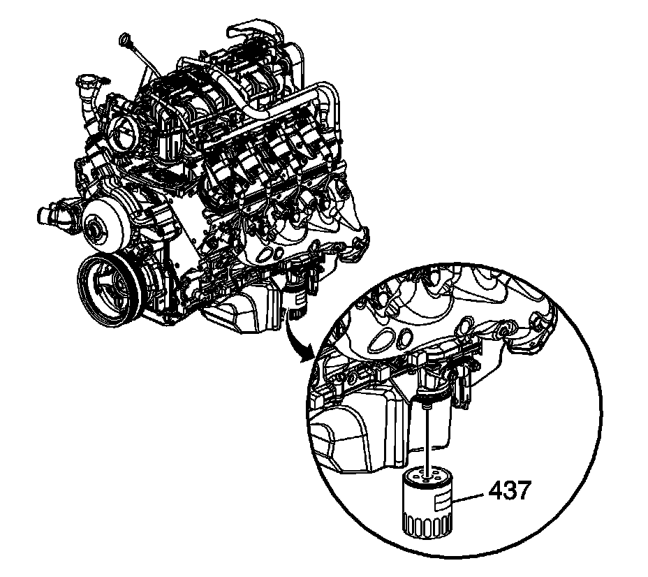

Engine Oil: Service and Repair
Engine Oil and Oil Filter Replacement
Removal Procedure

1. Open the hood.
2. Remove the oil fill cap.
3. Raise and suitably support the vehicle. Refer to Lifting and Jacking the Vehicle.
4. Place a oil drain pan under the oil pan drain plug.
5. Remove the oil pan drain plug (430).
6. Allow the oil to drain completely.
7. Clean and inspect the oil pan drain plug, replace if necessary.
8. Clean and inspect the oil pan sealing surface, replace the oil pan if necessary.
9. Wipe any remaining oil from the drain plug hole and reinstall the oil pan drain plug until snug.

10. Position the drain pan under the oil filter.
11. Remove the oil filter.
12. Ensure that the oil filter gasket is still on the old filter if not, remove the oil filter gasket from the oil pan.
Installation Procedure
1. Apply clean engine oil to the NEW oil filter seal.
Notice: Refer to Fastener Notice.
2. Install the NEW oil filter.
Tighten the oil filter to 30 N.m (22 lb ft).
3. Tighten the oil pan drain plug.
Tighten the drain plug to 25 N.m (18 lb ft).
4. Remove the oil drain pan from under the vehicle.
5. Lower the vehicle.
6. Fill the engine with new engine oil. Refer to Approximate Fluid Capacities and Fluid and Lubricant Recommendations.
7. Start the engine.
8. Inspect for oil leaks after engine start up.
9. Turn off the engine and allow the oil a few minutes to drain back into the oil pan.
10. Remove the oil level indicator from the indicator tube.
11. Clean off the indicator end of the oil level indicator with a clean paper towel or cloth.
12. Install the oil level indicator into the oil level indicator tube until the oil level indicator handle contacts the top of the oil level indicator tube.
13. Again, remove the oil level indicator from the oil level indicator tube keeping the tip of the oil level indicator down.
14. Check the level of the engine oil on the oil level indicator.
15. If necessary, adjust the oil level by adding or draining oil.
16. Check for oil leaks.
17. Close the hood.